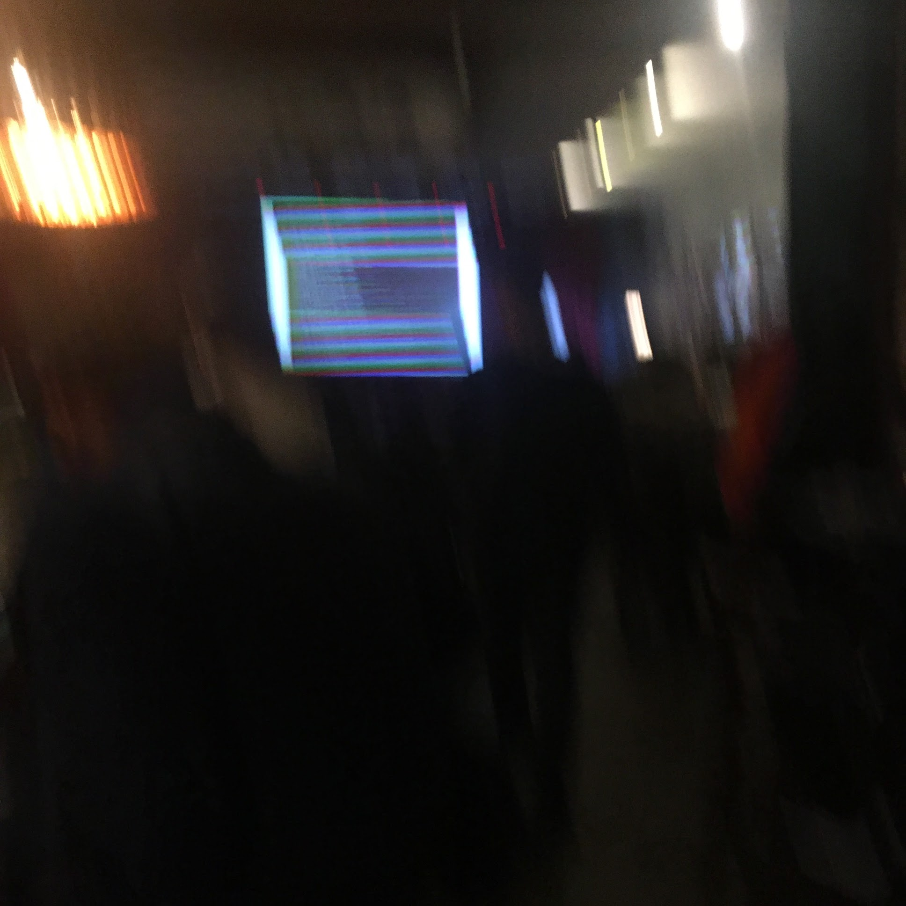
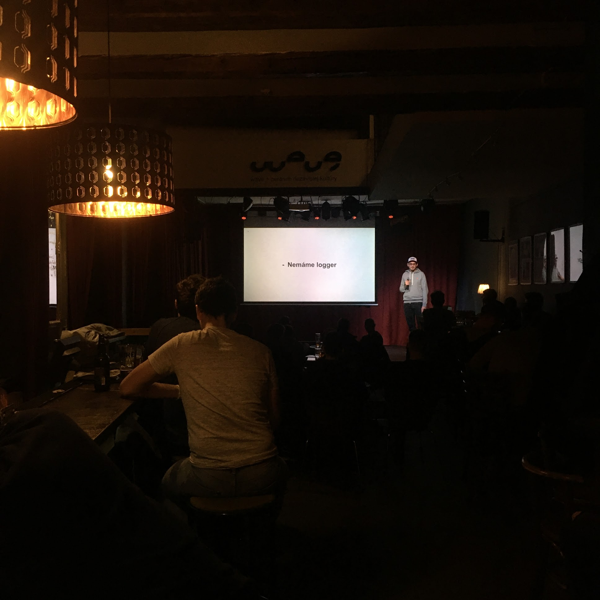
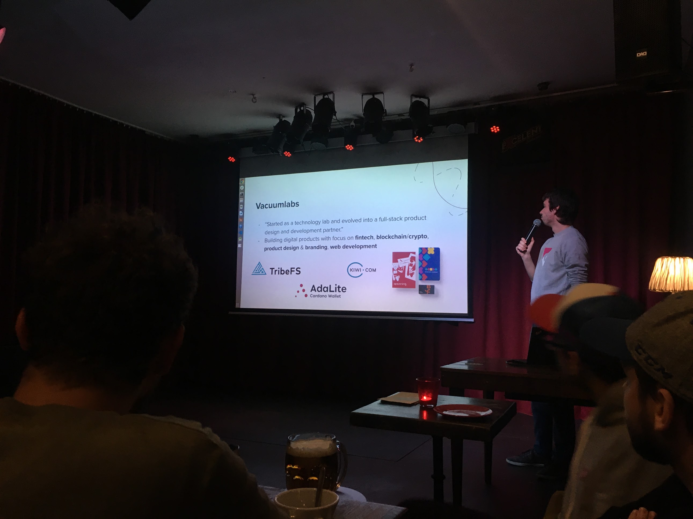

Dátum: 30. október 2019, Wave Prešov
Comeback (prvýkrát)!
WebElement v Prešove rozhodne nie je neznáma vec. Od roku 2011 mali už štyridsaťšesť meetupov (a ani raz sa mi ho nepodarilo stihnúť; vina je jednoznačne (!!!) na strane národných dopravcov, kde je nemožné sa večer dostať z Prešova do Košíc).
Tentokrát som sa odhodlal a vpadol rovno na „comeback“ (pretože to bol len druhý meetup po deväťmesačnej prestávke) a rovno som videl tri dve prednášky.
Prešovský Wave je skvelé miesto vždy pripravené na kultúru a logicky if koncert then wave. Je tam bar, je tam pódium, je tam projektor, je tam veľké plátno, je tam zvuková technika, prakticky sa len postaviť a prednášať. (Kiež by sme aj u nás v Košiciach mali takýchto Wavov.)

Prestaňme už konečne robiť YOLO development (Jany Koščo)
Za starých dobrých čias PHP stačilo vyhodiť index.php na server cez FTP na jediné prostredie (produkcia) a dúfať, že všetko pobeží. Lenže doba je krutá, a zrazu treba všetky tie bundlery, gitlaby/githuby, CI/CD, monitoringy, dokery, kubernetesy, newrelicy a zrazu nie je jasné, kde človeku hlava stojí.
Inak povedané, ešte včera som si žil slobodne ako developer a od zajtra potrebujem zmáknuť 7 rozličných devops technológií a filozofických prístupov a rozpočet projektu letí do nebies.
Prednášateľ naložil prehľad všetkého užitočného, čo sa do projektu zmestí. Git, release z master branche, CI/CD, ktoré builduje a následne releasuje, dockery ako releasovateľné artefakty, logovanie, trasovanie, monitoring a stručne ku všetkému. Ako prehľad výborne.
Na dudravú nôtu: prednášky typu „pozrite sa, čo všetko musíte zvládnuť“ majú tendenciu vypnúť poslucháčov. Samotný Footshop podľa prednášajúceho zobral 2 roky, kým to nahodili, a majú dedikovaného jedného človeka. Robiť devops poriadne nie je ľahké a robiť ho parttime je takmer nemožné, o to viac na projektoch o troch fullstackových ľuďoch.
Ale: na malých projektoch je rozhodne užitočné ukazovať smerovanie a stav toho, kde sa súčasný devops nachádza a táto prednáška to dala.

Ako na naozaj natívne aplikácie v React Native? (Marián Opiela)
Podľa popisu udalostí mal ísť Marián až posledný, ale organizátor prednášky strategicky vymenil, čo bolo užitočné.
React Native je — spolu s Reactom bežným — hitovica. Svätý grál, kde z jedného zdrojáku vybuildujem aj Android, aj iOS, mal v histórii už viac pokusov a toto je ďalší z nich.
Marián začal propagáciou Vacuumlabsov, kde prešiel cez Hello World k jadru veci zo zákopov. Googlacky TensorFlow Lite je knižnica na rozpoznávanie obrázkov cez neurónové siete, ktorý má rozličné implementácie pre Android aj iOS. Keďže React Native zatiaľ nemá na to dedikovanú knižnicu, je to skvelá ukážka problému, kde treba siahnuť pod kapotu.
TLDR;: v Androide sa definuje interfejs a medzi Reactom Native a Androidom beží niečo ako RPC, kde si vieme vymieňať dáta. (iOS bol opísaný len slovne.)
Príklad bol doslova z praxe a Marián ukázal, na čo si treba dať pozor a čím všetkým si prešli, navyše na zaujímavej ukážke.
Za mňa azda len mentálna poznámka pre speakera: scrollovanie zdrojákmi z GitHubu môže byť chaotické, ale zase: ukazovanie zdrojákov na prednáške rozumným spôsobom je tiež zatiaľ nedosiahnuteľný svätý grál.

Novinky zo sveta Laravelu (Ivan Ivančo)
Laravel a ekosystém PHP ide mimo mňa, takže vzhľadom na pokročilý čas som prednášku vynechal.
Na odchode som zachytil pozoruhodný koncept: Laracon Tribute Band. Ivan sa zúčastnil na amsterdaskom Laracone a publiku podal highlighty. Vlastne to by som aj ja mohol podať v Košiciach novinky zo sveta WebElementu!
Záver
Podľa miestnych veteránov bol tento WebElement úspech. Tri prednášky neboli zvykom, účasť bola hustá 30+ („bývali časy, keď sme sa zišli piati na pive“ riekol staršina) a témy boli elegantne frontend-backend-infraštruktúra.
Verím, že comeback vydrží!